Raptor 引擎的「外观极简化」并不是工程奇迹,本质是九年来系统性删掉外露零件——传感器、火花塞、氦气管路、螺栓法兰、热盾、灭火系统——靠 3D 打印把它们藏进引擎内部;主架构 (FFSC) 几乎没动,推力反增 35%。
更值得借鉴的不是技术细节,而是SpaceX 用了「先做加法再做减法」的典型节奏——Raptor 1 是个布满传感器和导线的开发机,Raptor 3 是个把内部复杂性推向极致的成品机。这种「先冗余后精简」的迭代法,跟 Apple 做 iPhone 的节奏、跟 Toyota 做生产线的节奏是同一个方法论。
如果你是 SpaceX 关注者,大概率见过那张三台 Raptor 引擎并排的著名图片。Raptor 是 SpaceX 星舰 (Starship) 使用的发动机——猎鹰 9 号 (Falcon 9) 和猎鹰重型 (Falcon Heavy) 用的是 Merlin 引擎。它在 2016 年首次试车,2019 年装在 Starhopper 上首飞,2020 年装在 Starship 原型机上首飞,2023 年装在完整 Starship 堆栈上首飞。从那以后,它一直在进化——从 Raptor 1 那团纠缠的管线和导线,变成了今年 5 月首飞的 Raptor 3 的流畅、极简造型。
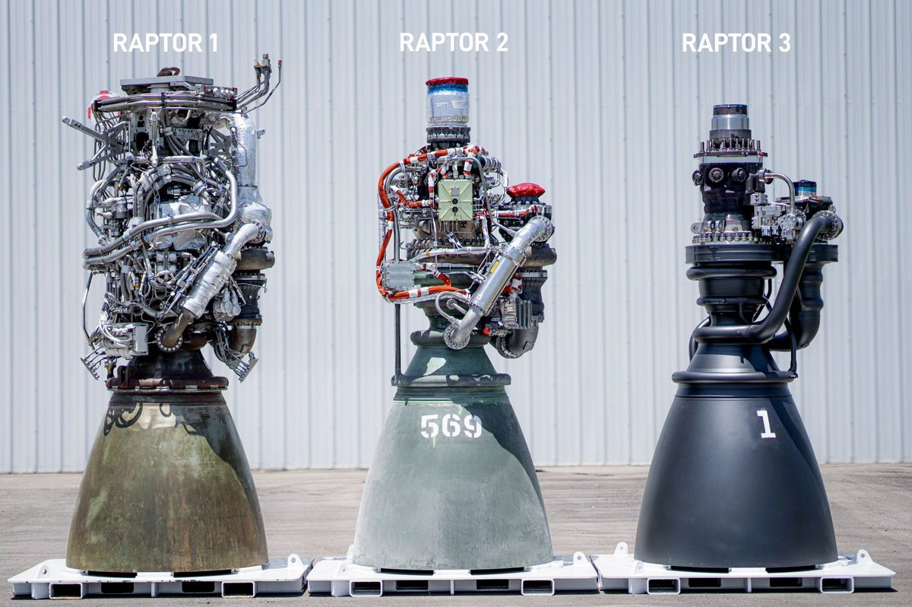
这种变化太剧烈,以至于很多人一开始根本不信是真的——ULA (United Launch Alliance) 时任 CEO Tory Bruno 发推说「没必要为了展示一台部分组装的引擎而做夸大」,随后 SpaceX 总裁 Gwynne Shotwell 转推了一张 Raptor 3 成功点火的照片作为回应。
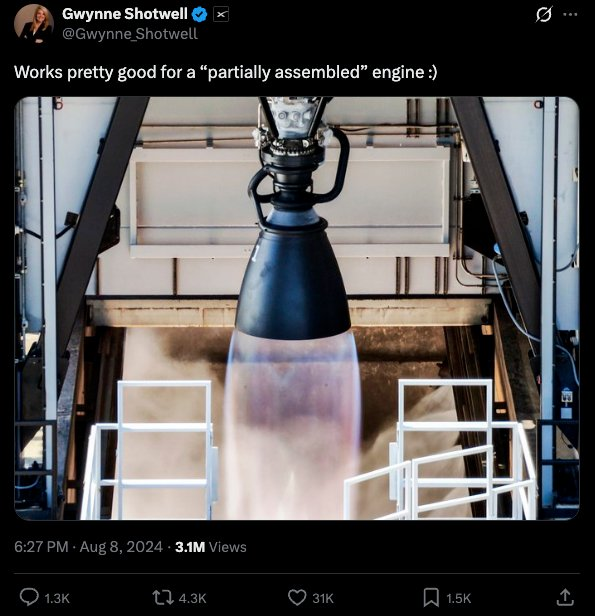
这种极简化的同时,性能也有实质提升——Raptor 3 的推力比 Raptor 1 高出约 35%。
"This streamlining has come alongside meaningful gains in performance, with the Raptor 3 providing about 35% more thrust than the Raptor 1."我想深入理解这次进化究竟是怎么发生的。SpaceX 具体改了什么,让它从右侧那团管线和导线,变成最右那台优雅、精简的引擎?
"I wanted to better understand how this evolution actually happened. What, specifically, did SpaceX change that allowed it to go from the tangle of wires and pipes to the svelte, streamlined engine on the right?"公开资料比预想的少。SpaceX 不发布任何官方 Raptor 原理图,也没人拆过 Raptor 引擎做逆向。但多亏 Elon Musk 偶尔的发言,以及大批 SpaceX 粉丝的推测,我们可以拼出主要改动的大致画面。
"There turned out to be less detail available here than I hoped. SpaceX doesn't publish any official Raptor schematics, and no one has done a teardown of a Raptor engine. But thanks to the occasional comment from Elon Musk, and the speculations of an army of SpaceX fans, we can get some idea of what the major changes have been."Raptor 是一台「全流量分级燃烧 (full-flow staged combustion, 简称 FFSC)」发动机。具体什么意思?
"The Raptor engine is a 'full-flow staged combustion' (FFSC) engine. What exactly does that mean?"火箭发动机靠把质量 (「推进剂」) 从喷管喷出产生推力——基于牛顿第三定律 (「每个作用力都有一个等大反向的反作用力」),这就把火箭往反方向推。能喷出的质量越多、喷出速度越快,推力就越大。
"A rocket engine works by throwing mass ('propellant') out of a rocket nozzle — due to Newton's Third Law ('for every action there is an equal and opposite reaction'), this pushes the rocket in the other direction. The more mass you can throw out, and the faster you throw it, the more thrust your rocket engine will produce."最简单的办法:往一个罐子里充入高压气体,然后让一部分气体从罐子底部喷出。喷出的气体推动火箭,原理跟松开气球让气跑出去、气球会飞走一样。这种「冷气推进器 (cold gas thruster)」通常用来做航天器姿态的微调。NASA 的「载人机动单元 (Manned Maneuvering Unit)」,以及 SpaceX 猎鹰 9 号的姿态控制推进器,用的都是冷气推进。
"The simplest way to do this is to simply fill a tank full of pressurized gas, and vent some of the gas out. ... This sort of rocket, called a 'cold gas thruster,' is often used for making minor adjustments to a spacecraft's position or orientation. Cold gas thrusters are found on, among other equipment, NASA's Manned Maneuvering Unit, and the control thrusters for SpaceX's Falcon 9 rocket."冷气推进器简单可靠,但推力有上限。要更大推力,最直接的办法是用两种推进剂:一种燃料 (比如煤油) 加一种氧化剂 (比如液氧),在燃烧室里一起燃烧,产生高温气体从火箭喷管后端喷出。这样不只是利用推进剂里的压力能,还把化学键里储存的能量也转化成推力。用推进剂储罐的压力把燃料和氧化剂压进燃烧室的发动机叫「压力馈送发动机 (pressure-fed engine)」。阿波罗登月舱上升段用的就是这种——它用四氧化二氮 (N₂O₄) 做氧化剂、用一种叫 Aerozine 50 的燃料,两者都靠压力压送。
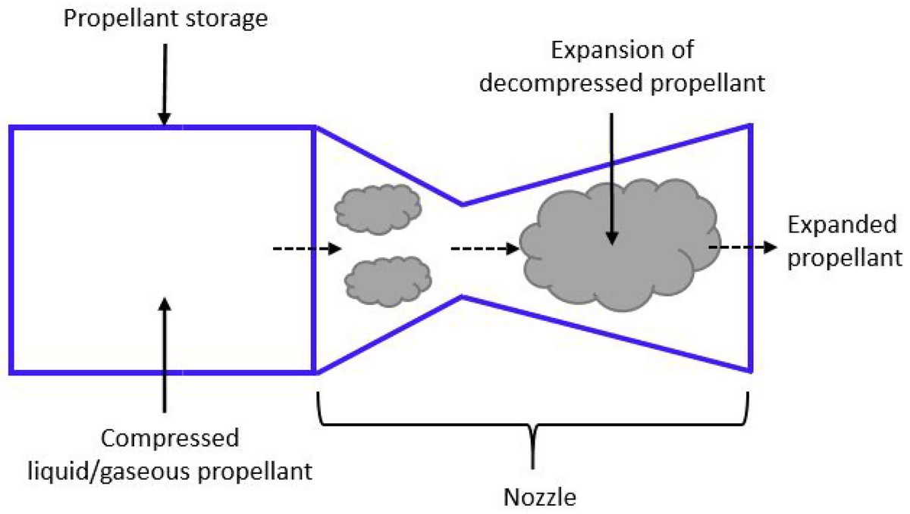
但这就引出一个问题:为了让燃烧室里的高温燃气不会倒流进燃料和氧化剂管路 (让燃烧室「饿死」),燃烧室压力必须比推进剂储罐和管路里的压力低。但对一台紧凑、强力的火箭发动机来说,我们又想要燃烧室压力非常高。你可以靠提高储罐压力解决,但很快就不现实了——压力越高,储罐和管路就要越厚越重,才能保证不爆。更聪明的办法:把推进剂低压储存,用一台泵把压力加上去再送进燃烧室。这是现代大推力火箭发动机的标准做法——几乎所有入轨火箭发动机都用某种泵来给燃料和氧化剂加压。
"A better solution is to store the propellants at low pressure, and then feed them through a pump that increases their pressure before they reach the combustion chamber. This is the standard way to build a powerful rocket engine, and virtually every engine used for putting a rocket into orbit uses a pump of some kind to pressurize the fuel and oxidizer."新问题来了:由于要处理的流量大、要加的压力高,这些泵需要巨大的功率来运转。比如土星五号火箭 F-1 发动机的涡轮泵,大约需要 41 兆瓦的功率——略低于 S8G 核反应堆给俄亥俄级潜艇螺旋桨轴输出的功率。
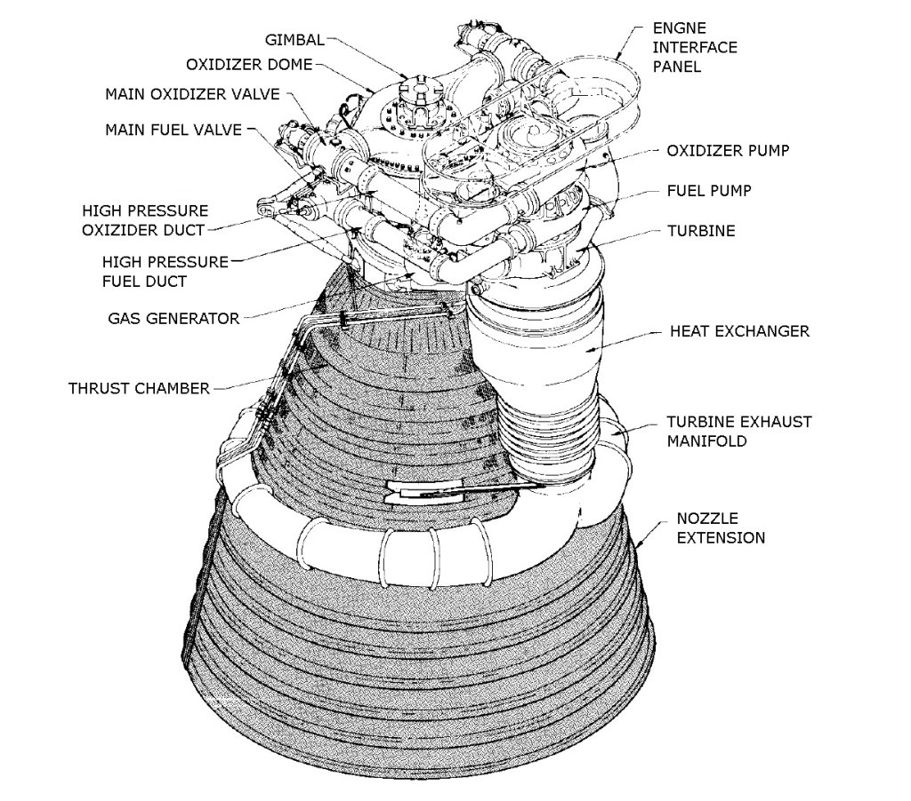
一种供电方式是电池——Rocket Lab 的 Electron 火箭发动机就是电池供电的电泵——但更常见的做法 (几乎所有大型助推火箭都这么干) 是用火箭自己的推进剂当动力源:烧少量燃料和氧化剂驱动一台涡轮,涡轮再驱动泵。
"One way to provide this power is with a battery — Rocket Lab's Electron rocket has an engine with a battery-powered electric pump — but the more common strategy, employed by virtually every large booster rocket, is to use the rocket's own propellant as a power source, burning a small amount of fuel and oxidizer to drive a turbine that in turn drives the pump."这种系统有好几种配置方式。最简单:把少量燃料和氧化剂送进一台涡轮,然后把烧完的废气直接排掉。这叫「燃气发生器循环 (gas generator cycle)」——F-1 和 SpaceX 的 Merlin 用的就是这种。
"The simplest is to route a small amount of fuel and oxidizer to a turbine, and then vent the resulting exhaust. This is known as a gas generator cycle, and it's what's used on the F-1 engine, as well as SpaceX's Merlin engine."另一种:烧少量燃料和氧化剂驱动泵,但把烧过的推进剂再送进主燃烧室跟没烧过的燃料/氧化剂一起烧。这叫「分级燃烧 (staged combustion)」,驱动泵的那个小燃烧室叫「预燃室 (preburner)」。这种结构比燃气发生器循环复杂,但效率也更高——因为驱动涡轮泵的热废气不再是被浪费地排掉,而是参与了主燃烧。
"Another option is to burn some of the fuel and oxidizer to drive the pump, but then route the burned propellant through the main combustion chamber along with the unburned fuel/oxidizer. This is known as 'staged combustion,' and the smaller combustion chamber used to drive the pumps is called the 'preburner.' This is a more complex arrangement than a gas generator cycle, but it's also more efficient, since the hot exhaust that drives the turbopump isn't just wastefully vented."对大多数分级燃烧发动机,只有一部分推进剂走预燃室——剩下的绕过去直接进主燃烧室。但 SpaceX 的 Raptor 用的是分级燃烧里更激进的一种:「全流量 (full-flow)」。全流量发动机有两台预燃室,一台驱动燃料泵,一台驱动氧气泵。所有推进剂都流过预燃室:在第一台里,少量氧化剂在大量燃料中燃烧 (大部分燃料没烧完);在第二台里,少量燃料在大量氧气中燃烧 (大部分氧气没烧完)。富燃料和富氧气的两股气流一起进主燃烧室,在那里完全燃烧。
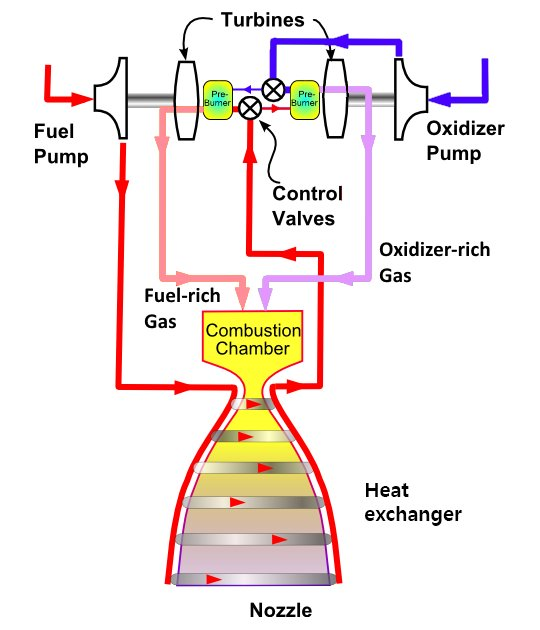
全流量分级燃烧发动机极其复杂。在 Raptor 之前只造过两台,而且两台都没成功飞过。俄罗斯人在 1960 年代研发过一台 FFSC——RD-270,但没飞过;美国人在 1990 到 2000 年代造过一台叫「综合动力头演示机 (Integrated Powerhead Demonstrator)」的部分 FFSC 发动机,但也从未发展成完整发动机。(SpaceX 2012 年开始搞 Raptor 时,获得了这台上用过的一些设备。) 但 FFSC 有几个优势,其中之一是理论上更可靠——因为驱动泵的涡轮里流过的质量大,涡轮可以在更低温度、更低压力下运行,理论上更可靠。如果你是一家押注可重复使用火箭的公司,更可靠的涡轮显然有吸引力。"A full-flow staged combustion engine is very complex, and prior to the Raptor only two had been built, neither of which successfully flew on a rocket. The Russians developed an FFSC engine in the 1960s, the RD-270, but it never flew, and the US built part of an FFSC engine called the Integrated Powerhead Demonstrator in the 1990s and 2000s, but it was never developed into a full engine. ... But an FFSC engine has several advantages, one of which is (theoretically) reliability."
SpaceX 对其先进火箭技术的细节讳莫如深,Raptor 实际如何运行的官方信息比你想的少得多。没人打开过 Raptor 引擎看内部,现有信息大多来自 Elon Musk 的推特,以及他在 Everyday Astronaut 采访里的发言。
"SpaceX is, understandably, tight-lipped about many of the specifics of its advanced rocket technology, and there's less official information on the exact details of how the Raptor operates than you might hope. Nobody has opened up a Raptor engine to show what's inside, and much of the information that exists comes from Elon Musk's tweets or his comments in Everyday Astronaut interviews."不过,有一大批 SpaceX 爱好者,他们会做类似这种偏执的事:拍下每一台出厂的 Raptor 引擎,他们花大力气去推测 Raptor 的工作方式。对我来说,这些推测最有用的产物,是粉丝们做的 Raptor 引擎原理图——展示 Raptor 被认为的工作方式。这些图不是官方出品,只是爱好者们拼凑各种来源做出来的,必须大打折扣地看待。但它们仍然是了解「人们认为各版 Raptor 是怎么工作的」的有用起点。
"There are, however, a lot of SpaceX enthusiasts out there, many of whom do things like obsessively photograph every Raptor engine leaving the factory, and these folks have put a lot of effort into speculating about how the Raptor engine works. The most useful output of this speculation, for me, is the various fan-made schematics ... These schematics aren't official — they're made by SpaceX enthusiasts piecing together information from various sources — so they must be taken with a large grain of salt."先看 Raptor 1 的一些原理图。下方这张由俄罗斯推进工程师 Elisei Maslov 在 2019 年绘制。
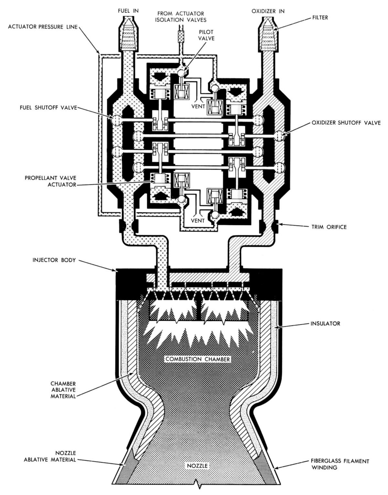
另一张有用的 Raptor 1 原理图是 NASASpaceFlight 论坛用户「hisdirt」2019 年 12 月做的。这张特别有用,因为它在 Raptor 引擎的 3D 模型上 (在 Revit 里建出来的,真想不到) 标注了各种引擎部件。
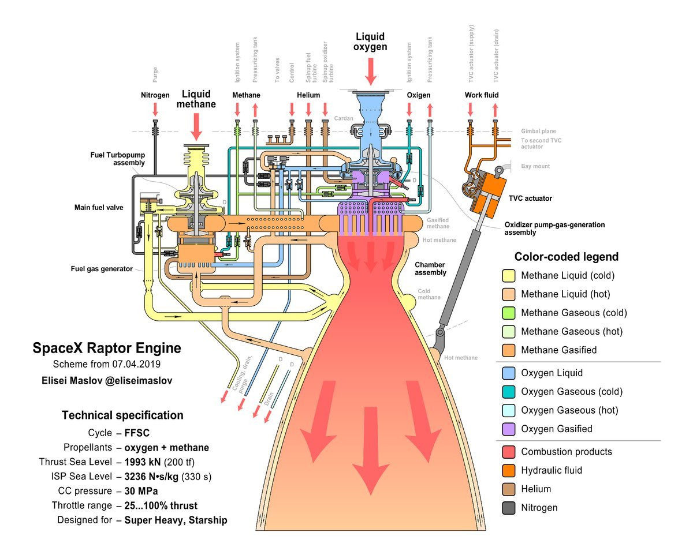
在这些原理图里,你能看到全流量分级燃烧发动机的基本部件:氧气泵、涡轮、预燃室在引擎顶部,燃料泵、涡轮、预燃室在侧面的总成。你还能看到燃料是怎么在喷管外表面流过、再回到预燃室——这叫「再生冷却 (regenerative cooling)」,用燃料把喷管冷却,免得它被火箭尾焰的高温熔掉。
"You can see in these schematics the basic components of a full-flow staged combustion engine: the oxygen pump, turbine, and preburner are on top of the engine, while the fuel pump, turbine, and preburner are the assembly on the side. You can also see how the fuel flows through the outside of the nozzle before going back into the preburner — this cools the nozzle so it doesn't melt from the heat of the rocket exhaust, and is known as regenerative cooling."下一张是 NASASpaceFlight 用户「Livingjw」和「HVM」2022 年 2 月做的 (来自 Wikipedia),展示 Raptor 2。这张不如 Maslov 的详细——基本只显示了氧气和甲烷的流向——但布局一样:顶部氧气泵总成,侧面燃料泵总成。
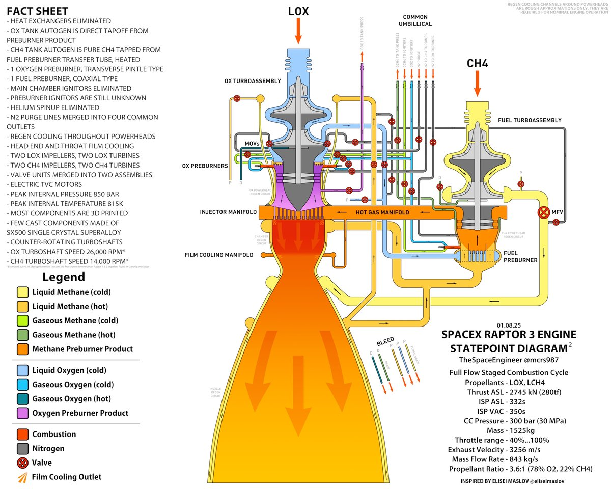
而这张是推特用户「TheSpaceEngineer」2025 年 1 月发的,展示 Raptor 3。
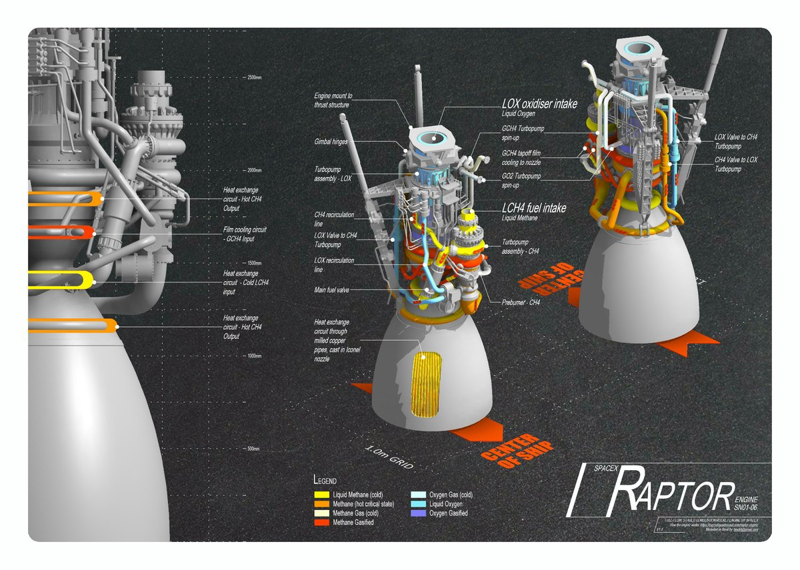
假设这些原理图没有严重误导,我们能看出 Raptor 1 和 3 之间的主要架构没变。它仍然是全流量分级燃烧,仍然是顶部氧气泵/涡轮/预燃室、侧面燃料泵/涡轮/预燃室的布局,燃料仍然用于再生冷却喷管。你还能看到 1 和 3 都有很多小管路是相同的——两者都有用于吹除 (把推进剂从系统里清空) 的氮气管路,都有通往点火器的燃料和氧化剂管路,都有把气态推进剂送回储罐以保持储罐压力的管路 (这叫「自生增压 (autogenous pressurization)」)。
"Assuming that these schematics aren't grossly misleading, we can see that the major architecture hasn't changed between version 1 and version 3 of the engine. ... And you can see that a lot of the smaller lines are the same on versions 1 and 3. Both show nitrogen lines used for purging (clearing propellant out of the system), both show fuel and oxidizer lines going to the igniters, and both have fuel and oxidizer lines carrying gaseous propellant back to the tanks to keep them pressurized as they empty (this is known as autogenous pressurization)."那到底改了什么?仔细对比 1 和 3 的原理图 (再强调一次,非官方推测),能看到几处差异。Raptor 3 的小管路被打包成「公共脐带 (common umbilical)」,看 Raptor 3 装在火箭上的照片就能看到这点:
"So what changed? If we look closely at the version 1 and version 3 schematics (remembering again that these are unofficial and speculative), we can see a few differences. Version 3 shows the smaller lines bundled together in a 'common umbilical,' and if we look at photos of the Raptor 3 connected to a rocket we can see this."Raptor 1 的原理图还显示有氦气 (helium) 用来初始启动燃料和氧气涡轮,Raptor 3 取消了这些管路,改用氮气。我不是很确定这个演进是否正确——Raptor 1 原理图下有 Reddit 评论员说其实没用氦气——但有证据表明的确用过。按这些原理图,1 上用来控制某些阀的氦气在 3 上也消失了,Raptor 3 原理图完全没有任何氦气管路。
"The version 1 schematic also shows helium being used to spin up the fuel and oxygen turbines initially, while in version 3 these lines have been eliminated, and nitrogen is used instead. ... Per these schematics, the helium used to control some valves present on version 1 is also absent on version 3, and the version 3 schematic shows no helium lines whatsoever."Raptor 3 原理图还显示一个热交换器被取消——NASASpaceFlight 论坛的网友也提到这点——这看起来是预燃室附近的一个气氧气热交换器。还有一条去预燃室的燃料管路,Raptor 1 上有、Raptor 3 原理图上没有。
"The version 3 schematic also notes that a heat exchanger has been eliminated, something echoed by various folks on the NASASpaceFlight forums — this appears to be a gaseous oxygen heat exchanger near the preburner. There's also a fuel line going to the preburner that's present on version 1 but is absent on the version 3 schematic."更可靠的改动来源,当然是 Elon Musk 和 SpaceX 的发言。2022 年 NASASpaceFlight 关于 Starship 进度的报道指出,Raptor 2 重新设计了「从涡轮机械到燃烧室喷管到电子设备」的一切,涡轮泵缩小了,预燃室控制器「被移到箱子里,而不是遍布引擎」。Everyday Astronaut 关于同一次更新的报道也提到「很多阀门被合并成阀板 (valve plates)」。在最近 (9 月 5 日) 回复前 Reddit CEO Yishan Wong 的推特时,Musk 列出了 Raptor 历次改动的一份短清单:
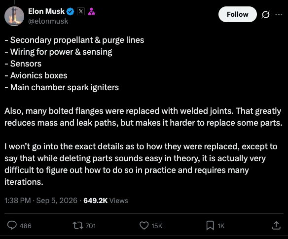
一个大类是传感器,以及它们需要的大量导线和电缆。据我了解,Raptor 1 在很大程度上是一台开发机,因此需要大量额外的传感器,监测引擎各部分的温度、压力等,以确定它的工作行为。随着引擎被「定标」,很多传感器可以被取消 (尽管有一些可能被移到了引擎内部)。
"One big category here is sensors, and the various wires and cables they require. From what I understand, Raptor version 1 was in large part a development engine, and thus required a lot of extra sensors monitoring things like temperature and pressure in various parts of the engine to determine how it was behaving. As the engine got dialed in, a lot of these sensors could be eliminated (though some of them may have been moved internally)."Musk 提到的另一点是主燃烧室火花塞。火花塞,顾名思义,用来在主燃烧室点燃燃料和氧化剂。Raptor 1 上有,但到 Raptor 2 它们被取消了。Musk 没说什么替代了它们,但这个变化可能跟一个事实有关:从预燃室出来的热燃料和氧化剂气流几乎不需要「帮忙」就会燃烧。NASASpaceFlight 2019 年的一条评论就怀疑,既然预燃室气流温度那么高,主燃烧室点火器到底是不是必需的。
"Another thing Musk calls out is the main chamber spark igniters. Igniters, per their name, ignite the fuel and oxidizer in the main combustion chamber. These were present in version 1 of the Raptor, but by version 2 they had been eliminated. Musk doesn't say what they were replaced with, but this change may have something to do with the fact that the hot fuel and oxidizer exhaust streams from the preburners probably need very little encouragement to combust."Musk 还提到,很多螺栓法兰连接被改成了焊接连接,减重、减少可能漏的接头,代价是可维护性变差。这个过程似乎仍在进行——早期 Raptor 3 照片显示引擎主体上有一个大的螺栓法兰,后来照片里它已经被取消:
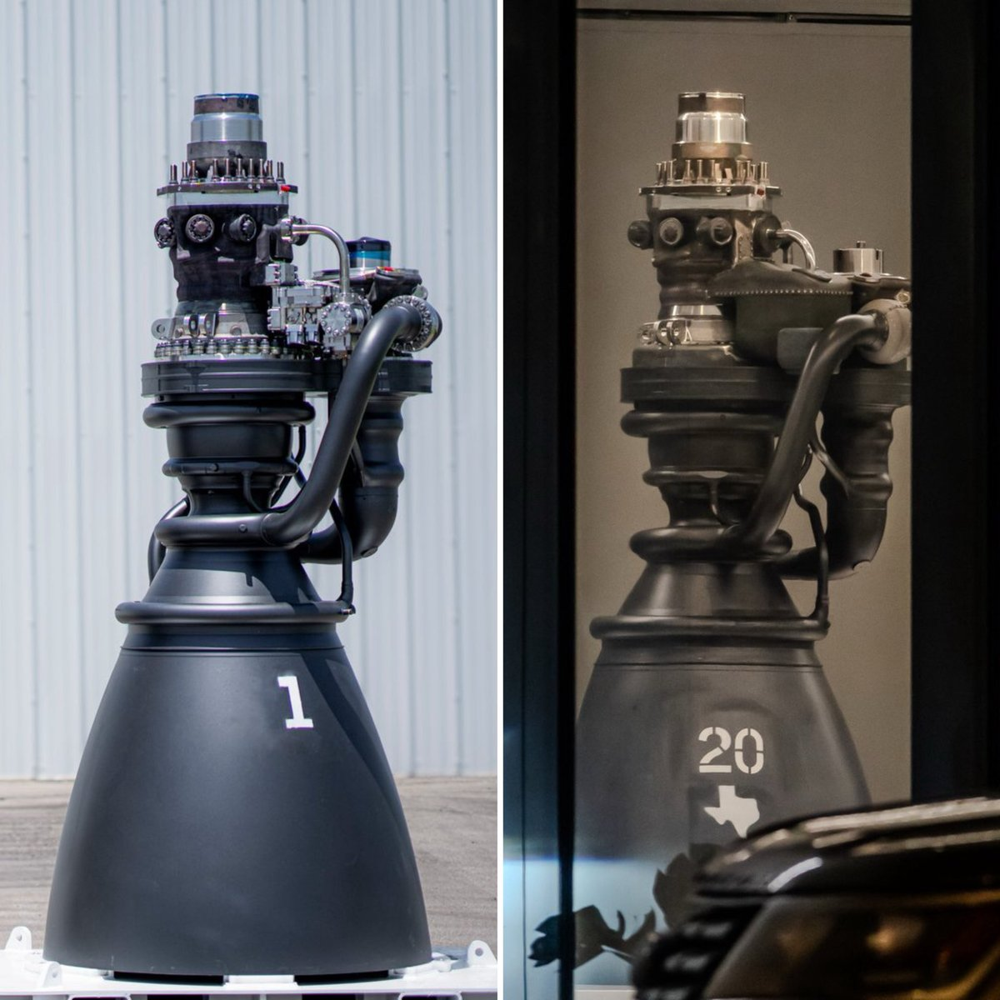
Raptor 3 上一个更大的改动是,很多管路其实没被取消,而是被移到引擎内部——通过 3D 打印很多部件实现 (Musk 之前提过 SpaceX「拥有世界上最先进的 3D 金属打印技术」,2024 年公司还授权了 Velo3D 的 3D 金属打印技术)。事实上,Raptor 3 的特写照片里就能看到 3D 打印的层纹:
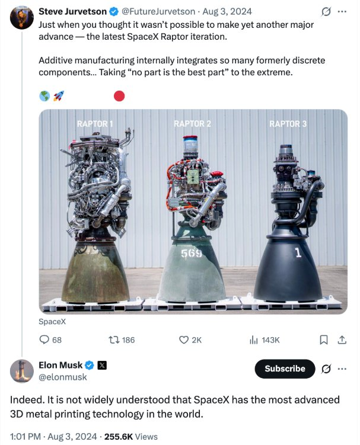
把管路内部化的目的是取消更多部件——特别是热盾和灭火系统。Raptor 1 和 2 上那堆大质量的导线和管路,需要一个又大又重的热盾,把它们从火箭尾焰的高温里保护起来。把各种推进剂管路内部化、再加上内部冷却系统,这个热盾和灭火系统就可以取消。事实上,Raptor 1 → 3 最大质量减重,来自「飞行器侧」引擎硬件的取消——这几乎可以肯定主要是热盾。
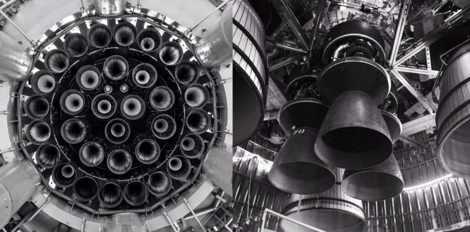
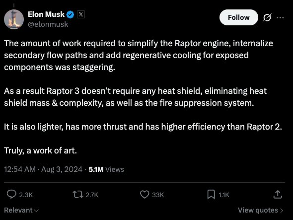
SpaceX 的 Raptor 引擎经历了令人印象深刻的进化:在短时间内走过了几个主要版本,性能大幅提升,质量和外露部件大幅减少。引擎的基础架构没变——它仍然是全流量分级燃烧,使用相同的主要部件——但支撑它运行的辅助元素和部件被大幅修改。
"SpaceX's Raptor engine has undergone impressive evolution, going through several major versions, a dramatic increase in performance, and a dramatic decrease in mass and external components in a short amount of time. The fundamental architecture of the engine hasn't changed — it's still a full-flow staged combustion engine, using the same primary components — but the various ancillary elements and components supporting its operations have been modified significantly."值得注意的是,虽然这种极简化让 Raptor 在「各个独立部件被取消」的意义上变简单了,但把它搞成可以工作 (Musk 语) 仍然是一个巨大复杂的任务——Raptor 3 内部增加的复杂性是巨大的,这些照片显示不出来。而且问题还没完全解决:今年 7 月 Starship 第 13 次试飞 (Flight 13) 首发尝试,就被飞行软件在 T-0 (点火前一刻) 自动中止,原因是几台 Raptor 3 引擎启动失败。
"It's worth noting that while this streamlining has made the Raptor engine simpler in the sense that various individual parts have been eliminated, it was still an (as Musk notes) enormously complex task to get it to work, and there's a huge amount of internal complexity added to the Raptor 3 that these pictures don't show. And the problems haven't been completely ironed out: the first launch attempt of Starship's flight test 13 was aborted automatically by the vehicle's flight software at T-0 (right before liftoff) this past July when several Raptor 3 engines failed to start."所以,几个版本的 Raptor 的图景,只是这项仍在持续进化的技术的一个快照。
"So the picture of several versions of the Raptor is a snapshot of a piece of technology that's continuing to evolve."
来源：Construction Physics · How SpaceX Streamlined the Raptor Engine · Brian Potter · 2026-09-17
本文为完整中英对照翻译,所有数据点已交叉核验 (Wikipedia · SpaceX 官方 · NASASpaceFlight · Everyday Astronaut · Bloomberg)